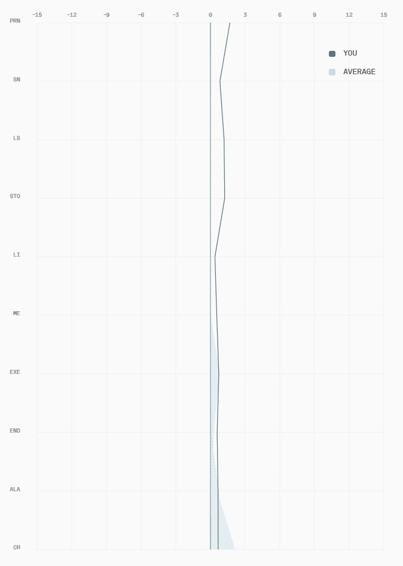

The measured analysis
Analysis
The objective layer of the report: facial shape, symmetry, proportions, averageness and sexual dimorphism, each scored against population data for your demographic and explained in plain terms.
Shape analysis
Face Shape — Oval
Your face is an oval type with normal widths at forehead, cheeks and jaw, and average length, so no single area dominates and your outline narrows smoothly from cheekbones to a rounded chin.
Forehead width
NormalMidface width
NormalLower-third width
NormalFacial length
Average
Proportions
Your slightly taller forehead and lower face with a more compact midface give your features a vertically accented structure that keeps the eyes and nose concentrated in the centre — without making the face look stretched.
Facial thirds
Proportions of total facial height. A balanced face sits near 0.33 each; your midface is slightly compact.
Symmetry
Quite symmetric
Your face is quite symmetric, with a strong overall balance between left and right sides. Minor asymmetries are present but typical and not visually dominant — and they remain within a normal, attractive range that does not affect overall balance or masculine appearance.

Landmark deviation
Deviation from the facial midline is measured at ten soft-tissue landmarks running top to bottom. Your trace hugs the centre line closely and tracks the population average, confirming the high score.
Averageness
Above average · quite typical
You're solidly within a typical facial range, with standard proportions and spacing. Distinctive touches in your brows, nose, lips and jaw add individuality without moving you away from mainstream demographic appeal.
Dimorphism range
An overview of your facial masculinity
Your face reads clearly masculine with an oval base, normal vertical thirds and a strong but not extreme male pattern. The Roman nose, long ramus, defined cheekbones, masculine hairline and solid jaw and chin drive the score, while softer elements around the eyes and lips keep you out of a harsh or exaggerated range.
Overall
Per-feature dimorphism
Jaw
Your long-ramus, U-shaped jaw with clear separation from a slightly thinner neck gives you a distinctly masculine lower third that looks strong without being blocky or overly wide.
Hair
Your dense, textured medium-brown hair with an M-shaped hairline and widow's peak reinforces a youthful masculine upper third and frames your prominent forehead strongly.
Eyebrows
Your mid-set, upturned brows with a sloped peak and dark color give your upper face a clearly masculine frame without feeling heavy or overgroomed. The blurred edges and medium density keep the expression firm but not aggressive.
Cheeks
Your lean cheeks and mid-set projecting cheekbones give your midface a defined, athletic look that reads masculine while still looking youthful because there is little nasolabial folding at rest.
Eyes
Your almond, neutrally tilted eyes with dark walnut irises and moderate lashes create a calm, grounded gaze that reads slightly masculine without looking sharp or aggressive.
Nose
Your Roman nose with a high bridge, visible hump and upturned defined tip gives your face a strong vertical anchor and clearly masculine central structure without looking excessively wide or long.
Lips
Your medium-volume, slightly bottom-heavy lips with a short philtrum and no tooth show at rest give your mouth a compact, masculine presence that still looks healthy and smooth.
Chin
Your standard-width, neutrally projecting round chin continues the masculine jawline and finishes your face with a solid endpoint rather than a pointed or receding lower third.
Neck
Your muscular, defined neck with only slight Adam's apple visibility strengthens the sense of physical robustness and highlights the jaw contour by being slightly slimmer laterally.
Ears
Your slightly protruding, rounded ears with a developed antihelix and Darwin's tubercle add subtle three-dimensional detail at the side view and support the overall masculine read without feeling oversized.